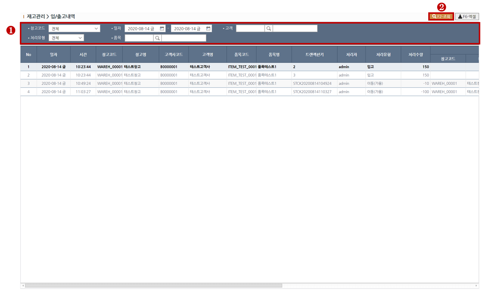

<div class="intro">
	<h2 class="az-content-title mg-b-20 tx-bold">입출고내역</h2>
	<p class="mg-b-20">
	재고와 관련된 처리내역을 조회하는 화면입니다.<br>
	<br>
	</p>
</div>

<div id="rgb-stck4-content1">
	<div class="az-content-label mg-b-5">1. 조회하기</div>
	<small>
		<span class="tx-primary tx-bold"> > STEP-1</span> 조회목록의 필터링을 원하실땐 조회조건을 입력합니다. <br>
		<span class="tx-success tx-bold"> > STEP-2</span> 상단의 조회(F2)버튼을 클릭하여 조회합니다. <br>
	</small>
	
	<div class="mg-t-25">
    	
    </div>
    
</div>
